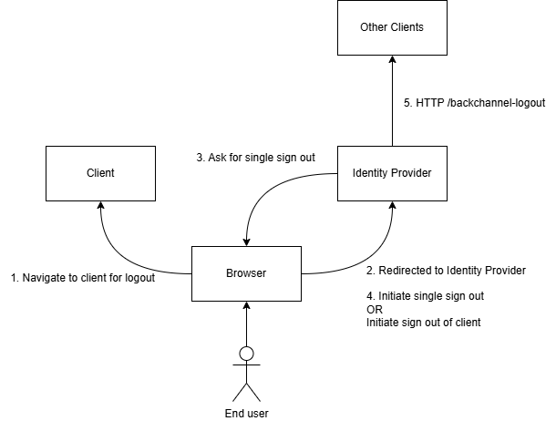

RP-Initiated Logout
The client (or relying party RP) can initiate logout at the IdP through an end session endpoint. The flow can logout the end user of the initiating client, or end the session at the IdP, and logging out all clients on the session of the end user.
The logout of all clients is done through backchannel logout from the IdP.
The following image shows the logout flow, from logout at the client, to backchannel logout at the identity provider.

| Name | Description |
|---|---|
| OpenId Connect RP-Initiated Logout | Specification for the RP to logout at the IdP |
| OpenId Connect Backchannel Logout | Specification for the IdP to logout clients |
| OpenId Connect Core | Core specification for OpenId Connect |
Once the client has initiated the logout flow, the client redirects to the identity provider "end-session" endpoint.
The identity provider then provides a page for the end-user to let the user either continue logging out from the client, or continue a single sign out flow.
The single sign out flow differs by initiating a backchannel logout request to all clients with grants in the end-user's session. Whereas only logging out from the initiating client, requests backchannel logout to that client, and the session is not revoked.
The page being displayed for the end-user is custom and defined at the LogoutUri.
The request parameters for the end session endpoint are described in table 2.
| Name | Description |
|---|---|
| id_token_hint | Id token belonging to the end user logging out. This is optional. |
| client_id | ClientId of the client logging out on behalf of the end user. This is optional. |
| post_logout_redirect_uri | URI to redirect to after logging out. This is optional. |
| state | State parameter used with the redirect URI to mitigate CSRF attacks. This is required if redirect uri is provided. |
The following HTTP example shows an end-session request.
GET /connect/end-session?id_token_hint=eybjsdvbb HTTP/1.1
Host: idp.authserver.dk
The following HTTP example shows an end-session response, redirecting to the LogoutUri.
HTTP/1.1 303 SeeOther
Location: https://idp.authserver.dk/SignOut
Cache-Control: no-cache, no-store
The following HTTP example shows an end-session response, redirecting to the PostLogoutRedirectUri.
HTTP/1.1 303 SeeOther
Location: https://app.example.com/logout-callback?state=narfojdobnob
Cache-Control: no-cache, no-store
Once the end user has logged out, a request is sent from the IdP to the client logging out on behalf of the end user, and optionally all clients participating in the session.
The request parameters for the backchannel logout endpoint are described in table 3.
| Name | Description |
|---|---|
| logout_token | JWT containing claims about the end user being logged out. |
The following HTTP example shows a backchannel logout request to a client.
The endpoint is defined by the client, through their client metadata. The endpoint must accept the POST method, and the body content type is "application/x-www-form-urlencoded".
POST /backchannel-logout HTTP/1.1
Host: app.example.com
Content-Type: application/x-www-form-urlencoded
logout_token=eyascdiuvbiuv
The following HTTP example shows a backchannel logout response.
HTTP/1.1 200 Ok
The logout token is a structured JWT and is signed the same as an Id token. It can optionally be encrypted the same as an Id token. The behaviour is defined by the client metadata for id tokens.
The token contains the fields defined in table 4.
| Name | Description |
|---|---|
| iss | URI of AuthServer, as defined in the discovery document. This is required. |
| sub | End user identifier. This is required if sid is not provided. |
| aud | Client identifier. This is required. |
| iat | Time of token issuance. This is required. |
| exp | Time of token expiration. This is required. |
| jti | Token identifier. This is required. |
| sid | Session identifier. This is required if sub is not provided. |
| typ | Type of JsonWebToken. This is a required header and must be logout+jwt. |
| events | JSON object, with field http://schemas.openid.net/event/backchannel-logout. This is a required. |
The token must contain a sid or sub claim, and optionally it can contain both.
The following JSON example shows a base64 decoded logout token sent to a backchannel logout endpoint.
The signature block is omitted.
{
"typ": "logout+jwt",
"alg": "ES256"
}
.
{
"iss": "https://idp.authserver.dk",
"sub": "527deb3f-ea48-46c5-bb94-4d267a080fa7",
"sid": "2a105f5a-06fc-4c5b-ba92-88ac2524b44b",
"aud": "16a5c393-0084-4e2b-a538-f1c8a50b6161",
"iat": 1471566154,
"exp": 1471569754,
"jti": "2c91dc13-6c7b-4dff-9f1c-e10c48bc549c",
"events": {
"http://schemas.openid.net/event/backchannel-logout"
}
}